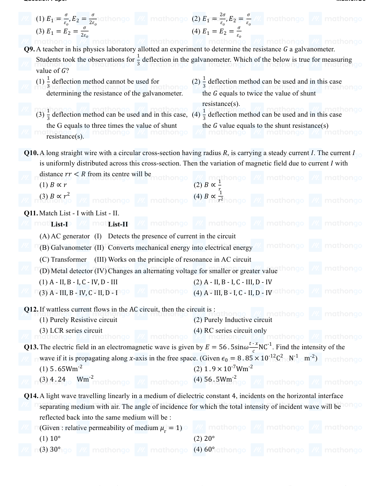
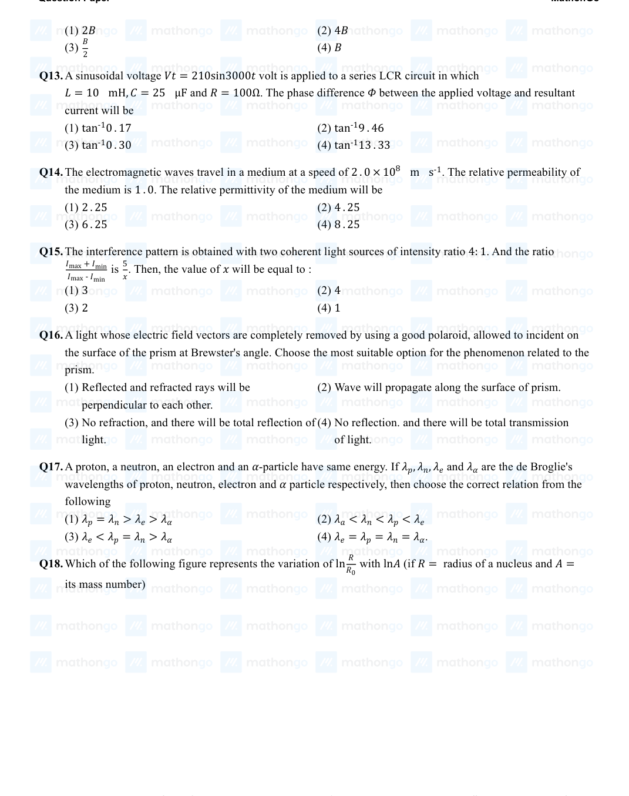
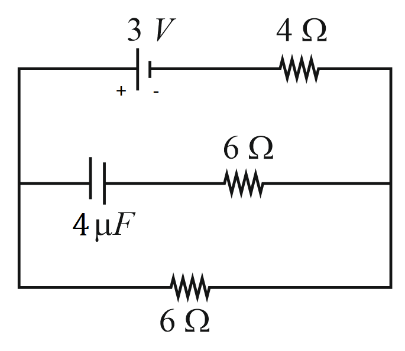

Filter questions
📌 PHY-ALTECURR-STD_CONCEPT
↗ Cluster set
Q1
PHY-2021-0101-S2-Q013
2021 | 16 Mar | Shift 2
—
MCQ
For the given circuit, comment on the type of transformer used:

Answer: C
Q2
PHY-2021-0101-S2-Q014
2021 | 18 Mar | Shift 2
—
MCQ
In a series LCR circuit, the inductive reactance (XL) is 10 Ω and the capacitive reactance (XC) is 4 Ω. The resistance (R) in the circuit is 6 Ω. The power factor of the circuit is: 1 1
Answer: C
Q3
PHY-2021-0101-S2-Q017
2021 | 20 Jul | Shift 2
—
MCQ
For a series LCR circuit with R = 100 Ω, L = 0. 5 mH and C = 0. 1 pF connected across 220 V −50 Hz supply, the phase angle between AC current and supplied voltage and the nature of the circuit is:
Answer: D
Q4
PHY-2021-0101-S2-Q026
2021 | 20 Jul | Shift 2
—
Integer
A series LCR circuit of R = 5 Ω, L = 20 mH and C = 0. 5 μF is connected across an AC supply of 250 V, having variable frequency. The power dissipated at resonance condition is ________ ×102 W.
Answer: 125
Q5
PHY-2021-0101-S2-Q012
2021 | 25 Feb | Shift 2
—
MCQ
Match List I with List II. List I List II
Answer: A
Q6
PHY-2021-0101-S1-Q003
2021 | 27 Aug | Shift 1
—
MCQ
Which of the following is not a dimensionless quantity?
Answer: C
Q7
PHY-2021-0101-S1-Q014
2021 | 31 Aug | Shift 1
—
MCQ
In an ac circuit, an inductor, a capacitor and a resistor are connected in series with XL = R = XC. Impedance of this circuit is:
Answer: B
Q8
PHY-2021-0101-S2-Q026
2021 | 31 Aug | Shift 2
—
Integer
At very high frequencies, the effective impedance of the given circuit will be _________Ω.

Answer: 2
Q9
PHY-2022-0101-S1-Q011
2022 | 25 Jun | Shift 1
—
MCQ
Match List - I with List - II. List-I List-II
Answer: A
Q10
PHY-2022-0101-S1-Q012
2022 | 25 Jun | Shift 1
—
MCQ
If wattless current flows in the AC circuit, then the circuit is:

Answer: B
Q11
PHY-2022-0101-S2-Q013
2022 | 25 Jun | Shift 2
—
MCQ
A sinusoidal voltage Vt= 210sin3000t volt is applied to a series LCR circuit in which L= 10 mH, C= 25 μF and R= 100Ω. The phase difference Φ between the applied voltage and resultant current will be

Answer: A
Q12
PHY-2022-0101-S1-Q015
2022 | 27 Jun | Shift 1
—
MCQ
The current flowing through an ac circuit is given by I = 5 sin(120πt) A. How long will the current take to reach the peak value starting from zero?
Answer: D
Q13
PHY-2022-0101-S1-Q016
2022 | 29 Jun | Shift 1
—
MCQ
For a series LCR circuit, I vs ω curve is shown
Answer: C
Q14
PHY-2023-0101-S1-Q028
2023 | 06 Apr | Shift 1
—
Integer
An ideal transformer with purely resistive load operates at on the primary side. It supplies electrical 12 kV energy to a number of nearby houses at 120 V. The average rate of energy consumption in the houses served by the transformer is 60 kW. The value of resistive load ( Rs) required in the secondary circuit will be _________mΩ.
Answer: 240
Q15
PHY-2023-0101-S1-Q015
2023 | 11 Apr | Shift 1
—
MCQ
As per the given graph, choose the correct representation for curve A and curve B {Where Reactance of pure capacitive circuit connected with A.C. source XC= XL= Reactance of pure inductive circuit connected with A.C. source R= Impedance of pure resistive circuit connected with A.C. source Impedance of the series circuit } Z= LCR
Answer: D
Q16
PHY-2023-0101-S1-Q022
2023 | 12 Apr | Shift 1
—
Integer
Given below are two statements: Statement I: When the frequency of an AC source in a series LCR circuit increases, the current in the circuit first increases, attains a maximum value and then decreases. Statement II: In a series LCR circuit, the value of power factor at resonance is one. In the light of given statements, choose the most appropriate answer from the options given below. (1) Statement I is incorrect but Statement II is true (2) Both Statement I and Statement II are false (3) Both Statement I and Statement II are true (4) Statement I is correct but Statement II is false

Answer: 2
Q17
PHY-2023-0101-S2-Q014
2023 | 13 Apr | Shift 2
—
MCQ
Given below are two statements: Statement I: An AC circuit undergoes electrical resonance if it contains either a capacitor or an inductor. Statement II: An AC circuit containing a pure capacitor or a pure inductor consumes high power due to its non- zero power factor. In the light of above statements, choose the correct answer from the options given below:

Answer: C
Q18
PHY-2023-0101-S2-Q024
2023 | 25 Jan | Shift 2
—
Integer
A series LCR circuit is connected to an AC source of 220 V, 50 Hz. The circuit contains a resistance R = 80 Ω, an inductor of inductive reactance XL = 70 Ω, and a capacitor of capacitive reactance XC = 130 Ω. The power factor of circuit is x. The value of x is: 10
Answer: 1
Q19
PHY-2023-0101-S2-Q022
2023 | 31 Jan | Shift 2
—
Integer
A series LCR circuit consists of R = 80 Ω. XL = 100 Ω, and XC = 40 Ω. The input voltage is 2500 cos(100πt) V. The amplitude of current, in the circuit, is _____ A.
Answer: 5
Q20
PHY-2024-0101-S1-Q015
2024 | 01 Feb | Shift 1
—
MCQ
In series LCR circuit, the capacitance is changed from C to 4C. To keep the resonance frequency unchanged, the new inductance should be:

Answer: C
Q21
PHY-2024-0101-S1-Q028
2024 | 04 Apr | Shift 1
—
Integer
A alternating current at any instant is given by i = [6 + √56 sin(100πt + π/3)] A. The rms value of the current is ________ A.
Answer: 8
Q22
PHY-2024-0101-S1-Q014
2024 | 06 Apr | Shift 1
—
MCQ
Given below are two statements: Statement I: In an LCR series circuit, current is maximum at resonance. Statement II: Current in a purely resistive circuit can never be less than that in a series LCR circuit when connected to same voltage source. In the light of the above statements, choose the correct from the options given below:

Answer: C
Q23
PHY-2024-0101-S2-Q028
2024 | 27 Jan | Shift 2
—
Integer
A series LCR circuit with 100 10-3 and Ω, is connected across an AC source of L= π mH, C= π F R= 10 220 V, 50 Hz supply. The power factor of the circuit would be ____. o
Answer: 1
Q24
PHY-2024-0101-S2-Q014
2024 | 31 Jan | Shift 2
—
MCQ
An AC voltage V= 20sin200πt is applied to a series LCR circuit which drives a current I= 10sin200πt+ π 3. The average power dissipated is:

Answer: D